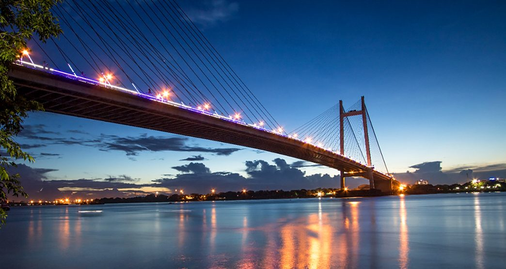

Vidyasagar Setu
Overview: Also known as the Second Hooghly Bridge, a toll bridge linking Kolkata and Howrah.
History & Significance: Opened in 1992, it is a fan-type cable-stayed bridge spanning 823 metres across the Hooghly River. Named after social reformer Ishwar Chandra Vidyasagar, it is an important part of the city's river crossings and skyline.